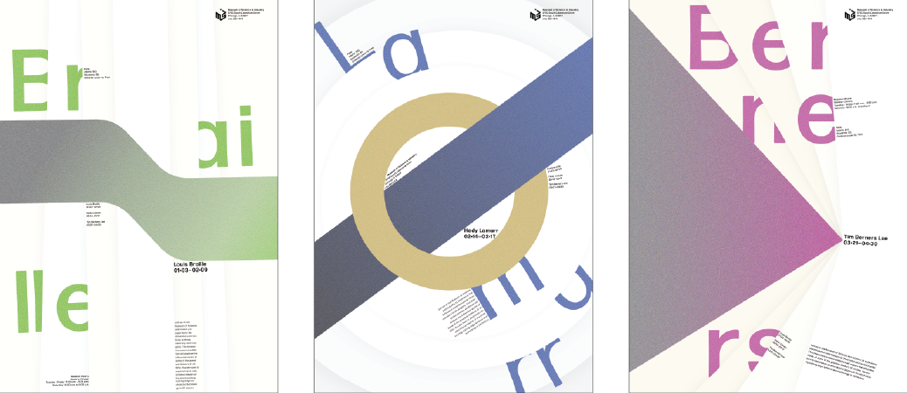

Connectors Posters
Each of the posters seeks to visually display the concepts of communication that each inventor’s work helped develop. Louis Braille helped transform communication from one form to another, Hedy Lamarr helped form methods for communication that were protective, and Berners Lee helped form communication methods that consolidated information into digestible means.
These principles are displayed by a long color shape that spans the width of the poster. The movement of this shape relates to the type of communication that they helped innovate. This shape is backed by a series of panels that emulate folded paper to give a greater impression of movement. These panels reveal the surname of the inventor in large colorful letters.